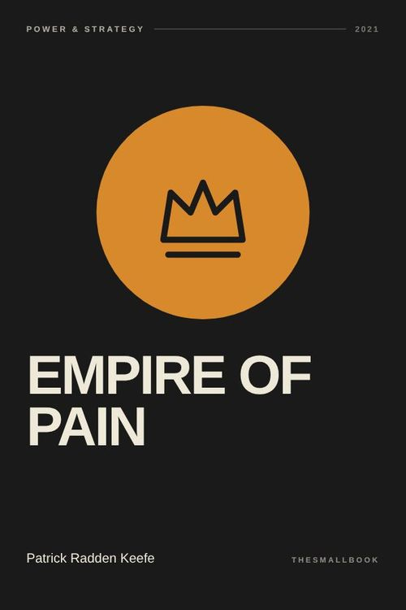

Library › Authors › Patrick Radden Keefe
Books by Patrick Radden Keefe
Patrick Radden Keefe has one book in the library. Every book here is read down to the big idea, the lessons, the lines worth keeping and the actions worth taking. Start with the summary, then buy the full book if it earns a place on your shelf.

Empire of Pain: The Secret History of the Sackler Dynasty
2021 · 13 min · 10 lessons
Keefe's forensic history of the Sackler family and Purdue Pharma: how marketing conquered medicine, how philanthropy laundered reputation, and how a fortune shielded itself from the deadliest drug crisis in American history.
Keefe traces three generations: Arthur Sackler, the marketing genius who invented modern pharmaceutical promotion (and pioneered the tranquilizer campaigns for Valium) while never practicing medicine again; his nephews Raymond, Mortimer and Richard, who built Purdue on OxyContin and launched it in 1996 with a campaign that recast pain as the fifth vital sign and addiction risk as negligible; and the decades of cover that followed: FDA regulators hired away mid-review, felony pleas absorbed as expenses, billions...
Lessons in the summary
- Marketing Can Outrun Medicine
- Own the Messenger, Not Just the Message
- Pain as a Vital Sign: Manufacturing a Market
- The Label Is the Crime Scene
- Fines as Subscriptions
- Extract While the Window Exists
- Philanthropy as Reputation Collateral
- Bankruptcy as a Wealth Vault
- Whistleblowers and Paper Trails
- What Accountability Looks Like When the Law Lags
Lines worth keeping
- It was not a failure of chemistry. Morphine worked in 1800 and it works now. It was a failure of incentives, at industrial scale.
- The question was never whether the drug was good. The question was who was allowed to say so, and what it cost to become that person.
- Philanthropy is the most efficient laundering mechanism ever devised: you buy immortality with money that never faces a jury.
Questions Patrick Radden Keefe helps answer
Read nearby authors next
- Amish Tripathi 6 books
- Robert Greene 6 books
- Devdutt Pattanaik 5 books
- Nassim Nicholas Taleb 4 books
- Radhakrishnan Pillai 3 books
- Sanjeev Sanyal 3 books
- Simon Sinek 3 books
- Al Ries & Jack Trout 2 books